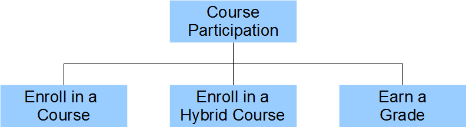
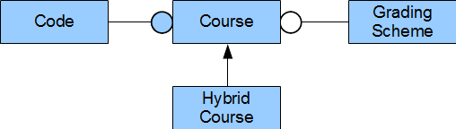
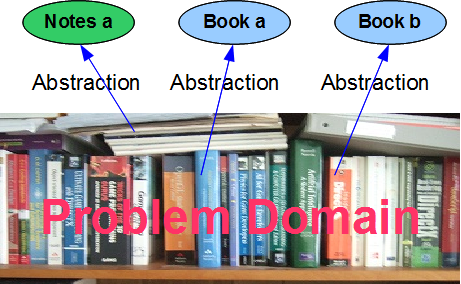
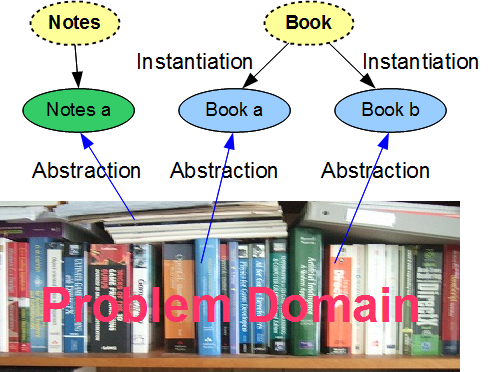
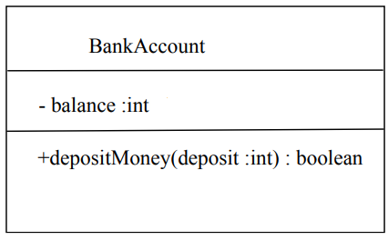
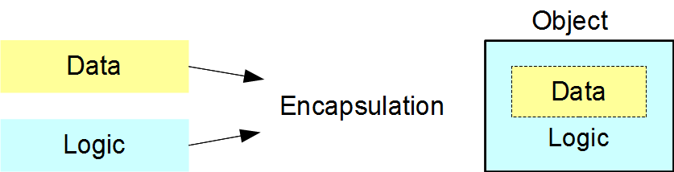
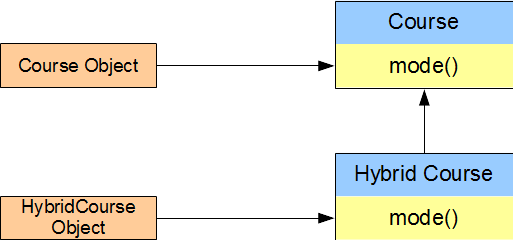
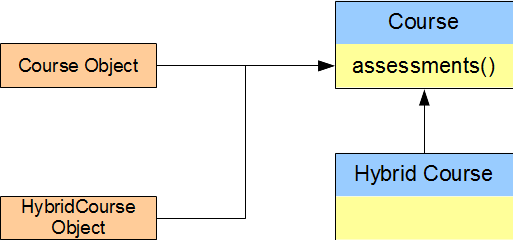

Modern software applications are intricate, dynamic and complex. The number of lines of code can exceed the hundreds of thousands or millions. These applications evolve over time. Some take years of programming effort to mature. Creating such applications involves many developers with different levels of expertise. Their work consists of smaller stand alone and testable sub-projects; sub-projects that are transferrable, practical, upgradeable and possibly even usable within other future applications. The principles of software engineering suggest that each component should be highly cohesive and that the collection of components should be loosely coupled. Object-oriented languages provide the tools for implementing these principles.
Large applications are complex. We address their complexity by identifying the most important features of the problem domain; that is, the area of expertise that needs to be examined to solve the problem. We express the features in terms of data and activities . We identify the data objects and the activities on those objects as complementary tasks.
Consider a course enrollment system for a program in a college or university. Each participant
The following structure diagram identifies the activities.
If we switch our attention to the objects involved, we find a Course and a Hybrid Course. Focusing on a Course, we observe that it has a Course Code. We lookup the Code in the institution's Calendar to determine when that Course is offered.
We say that a Course has a Code and uses a Grading Scheme and that a Hybrid Course is a kind of Course. The diagram below shows these relationships between the objects in this problem domain. The connectors identify the types of relationships. The closed circle connector identifies a has-a relationship, the open circle connector identifies a uses-a relationship and the arrow connector identifies an is-a-kind-of relationship.
In switching our attention from the activities in the structure chart to the objects in the relationship diagram we have switched from a procedural description of the problem to an object-oriented description.
These two complementary approaches to mastering complexity date at least as far back as the ancient Greeks. Heraclitus viewed the world in terms of process, while Democritus viewed the world in terms of discrete atoms.
Learning to divide a complex problem into objects and to identify the relationships amongst the objects is the subject matter of system analysis and design courses. The material covered in this course introduces some of the principal concepts of analysis and design along with the Java syntax for implementing these concepts in code.
Object-oriented programming reflects the way in which we manage day-to-day tasks. Professor Miller of Princeton University demonstrated that most of us can only comprehend about seven chunks of information at a time. As children, we learn to play with small sets of chunks at an early age. As we grow, we learn to break down the problems that we face into sets of manageable chunks.
A chunk in object-oriented programming is called an object. The shared structure of a set of similar objects is called their class. This shared structure includes the structure of the data in the similar objects as well as the logic that works on that data.
This chapter introduces the concepts of object, class, encapsulation, inheritance and polymorphism. Subsequent chapters elaborate on each concept in detail.
Programming solutions to application problems consist of components. The process of designing these solutions involves abstraction. In the C programming language, we abstract common code, store it in a structure or function and refer to that structure or function from possibly multiple places in our source code, thereby avoiding code duplication.
An object-oriented programming solution to an application problem consists of components called objects. The process of designing an object-oriented solution likewise involves abstraction. We distinguish the most important features of the object, identify them publicly and hide the less important details within the object itself.
Each object has a crisp conceptual boundary and acts in ways appropriate to itself. Compare a book with a set of notes. A book has pages that are bound and can be flipped. The page order is fixed. A set of notes consists of loose pages that can be rearranged in any order. We represent the book as an object and the set of notes as another object; each object has a different structure.
Example:We describe the structure of similar objects in terms of their class. Objects of the same class have the same structure, but possibly different states. The variable types that describe their states are identical, but generally have different values. For example, all of the books in the figure above have a title and an author, but each book has a different title and a different author.
The Unified Modelling Language (UML) is a general-purpose modeling language developed for describing systems of objects and relationships between their classes. This language defines standard symbols for classes and their relationships.
The primary graphic in UML is the class diagram: a rectangular box with three compartments:
where visibility is one of:
'+': public
'-': private
'#': protected
' ': default(package)

The naming conventions include:
UML uses the terms attributes and operations. Some object-oriented languages use different terms. Equivalent terms are:
attributes (UML) -> fields, data members, properties, member variables
operations (UML) -> methods (Java), procedures, messages, member functions
Encapsulation is the primary concept of object-oriented programming. It refers to the integration of data and logic within a class' implementation that establishes the crisp interface between the implementation and any client. Encapsulation maintains high cohesion within a class and low coupling between the class' implementation and any one of its clients.
A class definition declares the variables and the function prototypes. The variables store each object's data and the functions contain the logic that operates on that data. Clients access objects through calls to these functions without knowledge of the data stored within the objects or the logic that manipulates that data. 
A well-encapsulated class hides all implementation details within itself. The client does not see the data that the class' object stores within itself or the logic that it uses to manage its internal data. The client only sees a clean and simple interface to the object.
As long as the classes in a programming solution are well-encapsulated, any programmer can upgrade the internal structure of any object developed by another programmer without changing any client code.
Polymorphism relates the implementation for an object based on its type. In the Figure below, the HybridCourse object involves a different mode of delivery than the Course object, but the same assessments. Both objects belong to the same hierarchy: both are Course objects.
A mode() query on a Course type reports a different result than a mode() query on a Hybrid Course type. On the other hand, an assessments() query on a Course type reports the same result as on an HybridCourse type.


Polymorphic programming allows us to minimize the duplication of code amongst objects that belong to the same inheritance hierarchy.